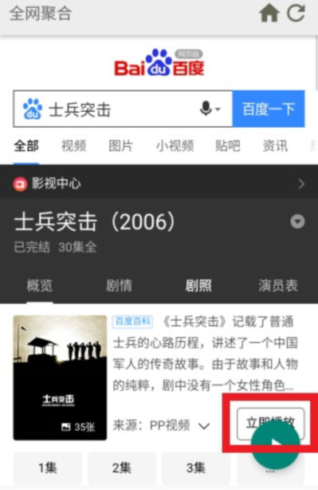
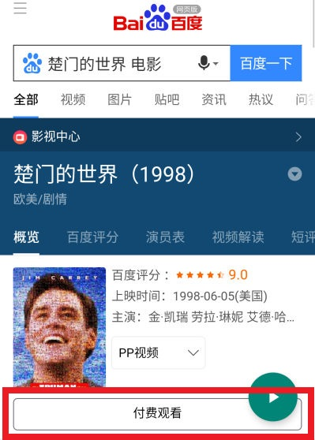

1. 应用介绍
为了解决部分场景下，观看影视难的问题，本应用聚合优质影娱内容，优化浏览和播放体验。
能将大多数网页内的视频解析播放并【投屏】到电视上，将各种电影、电视剧、音乐视频、短视频投屏到电视上，与"佳（家）"人共享。
注：本应用不致于替代传统的视频应用，而是为你观看影视增加一种选择，解决看部分影视难的问题。
2. 使用方法（简述）
进入任意网站的视频播放页面（如下图）。
应用将会弹出【播放按钮】（本文中方括号中的播放按钮所指的都是应用右下角绿色的播放按钮）
再点击该按钮即可【播放/投屏】当前页面的影视。
【电视端接收端建议在应用市场下载"乐播投屏"配合使用】
首页的搜索框可直接将关键词内的链接提取，在点击【百度一下】后可直接访问。（如下图）

方便从其他APP（如网易云、微信）复制视频链接，从而播放与投屏。
首页中为你准备了数个影视网站，当你在【知名视频网站】无法找到想看的影视，你可以选择在【非知名视频网站】中搜索与观看。
3. 使用方法（详述）
当你想看某个影视作品时，如果你知道该影视在哪个视频网站上，你可以直接进入该网站观看。
或者，你也不用挨个网站进行搜索，你可以直接在【首页】上方的【输入框】内，输入影视作品名称，然后【百度一下】（见下图）

接着选择其中的一集或者直接点击【立即播放】（如下图）
也有可能是下图的样子，直接点击【付费观看】就能进入播放页
如果想获取更好的播放体验，或者你想投屏至电视，你可以在正片播放页面，点击右下角【绿色】的【播放按钮】进行播放（如下图）
经验之谈：如果首页中的影视网站不够用，或者播放效果不理想，你可以直接百度搜索【影视名+在线播放】，寻找一个能够观看的网站，并使用【播放按钮】解析播放与【投屏】
5. 广告拦截
太多的影视网站都充斥着流氓广告，影响用户体验，本应用尽力将影响用户体验的广告全部拦截。
但有时，广告拦截可能会影响部分网页的正常使用。
如果你发现网页功能不正常，可以试着点击【右上角的菜单按钮】选择关闭广告拦截，再刷新页面即可。
如果未解决，说明该网站自身存在问题。
6. 使用技巧：浏览器全屏
应用浏览器页面的标题栏会随着你的滑动而【隐藏/显示】。
但在部分页面中是无法滑动的，此时你可以在浏览器顶部上下垂直滑动，来【隐藏/显示】标题栏

7. 常见问题：使用过程中出现奇怪的问题
请先重启应用，再试试是否还有该问题发生，如果问题依旧，请在【更多精彩】中，向开发者反馈并详述过程。
8. 常见问题：页面中有视频，应用却迟迟不显示【播放按钮】
这种情况是应用没有探测到视频，或视频失效。
你可以试着先打开页面中的视频，再看看应用是否会弹出【播放按钮】。
9. 常见问题：解析出来的影视和想看的不一致
有时确实会有这种情况，如果让你遇到了，还请在其他视频网站查找该影视并解析播放
10. 常见问题：被跳转到恶意网页，并且无法后退
有时候网络运营商或网站为了牟利，将浏览器跳转到流氓广告网页，并且无法正常后退。
你可以尝试快速按2次后退键离开，或点击顶部的【主页】按钮回到主页